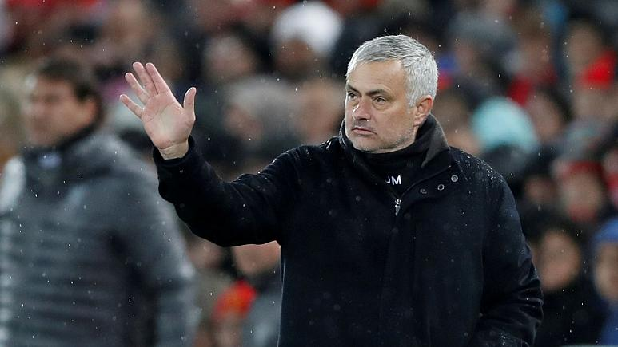
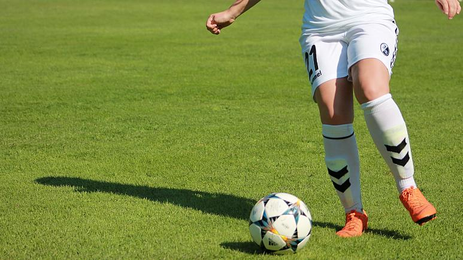

Inter Milan coach Antonio Conte advises his players on how to have sex with their partners during the season
Inter Milan coach, Antonio Conte has disclosed that he gave instructions to his players as to how to have sex with their partners in order to stay at their best form on the field of ...
Inter Milan coach, Antonio Conte has disclosed that he gave instructions to his players as to how to have sex with their partners in order to stay at their best form on the field of play.
The ex-Chelsea coach who is looking to end the dominance of Juventus, who are one point ahead of Inter Milan in Serie A, told his players that during the season sex they must not last long and the players must also stay under their partners.
Speaking to L'Equipe in a recent interview, the 50-year-old Italian coach said: 'Competition for me is battle,' 'It is "your death, my life". I am very focused on the fact that in the end there should only be one left standing and I do everything to make it my team.
"During the season, I advise my players to have sex for short periods and with the minimum of effort, and better use positions where they are under their partners. And preferably, with their wives, because if with others, well, that needs extra action."
Last updated 3 mins ago

Tottenham name Jose Mourinho as new boss after Mauricio Pochettino sacked
Jose Mourinho has been appointed the new manager of English football club Tottenham Hotspur, following the sacking of Mauricio Pochettino on Tuesday.
Jose Mourinho has been appointed the new manager of English football club Tottenham Hotspur, following the sacking of Mauricio Pochettino on Tuesday.
The 56-year-old Portuguese won three Premier League titles with Chelsea, and also managed Manchester United. He returns to management for the first time since being sacked by Manchester United in December.
Tottenham announced Mourinho would be their new manager on a contract running until the end of the 2022-23 season.
Spurs Chairman Daniel Levy said in a statement: "In Jose we have one of the most successful managers in football.
“He has a wealth of experience, can inspire teams and is a great tactician. He has won honours at every club he has coached. We believe he will bring energy and belief to the dressing room.”
Despite taking the club to their first Champions League final last season, Pochettino was fired after a poor run of form in 2019, which saw the team winning just six of their last 24 league games.
“I am excited to be joining a club with such a great heritage and such passionate supporters,” Mourinho said. “The quality in both the squad and the academy excites me. Working with these players is what has attracted me.”
Last updated 3 mins ago

Spain's top women footballers go on strike over pay dispute
pain's top women football players went on strike on Saturday in a dispute over working conditions and minimum wage.
Spain's top women football players went on strike on Saturday in a dispute over working conditions and minimum wage.
The two-day strike action resulted in the cancellation of eight matches scheduled to take place over the weekend.
Just under 200 players from 16 different clubs in the country's Women's First Division voted in October to go on strike after negotiations between the different bodies collapsed.
Players are demanding that the annual minimum wage for full-time contracts be increased to €16,000 while that of part-time contracts be boosted to €12,000. They are also calling for a maternity package and paid holidays.
The Association of Women's Football Clubs (ACFF) argues however that smaller clubs could not afford to increase the minimum salary from the current €8,000 per year.
The UD Granadilla Tenerife club, whose team was meant to clash with RCD Espanyol on Saturday, said in a statement that they "respect the position of the players to support the strike."
SPONSORED CONTENT
From Wagner to Broadway: A musical journey with Terfel at the Sydney Opera House
1
Musica, in partnership with Rolex
"Staff, technical body and management wish that a fruitful and positive agreement will soon be reached between all the parties involved, for the sake of women's football and generations to come," it added.